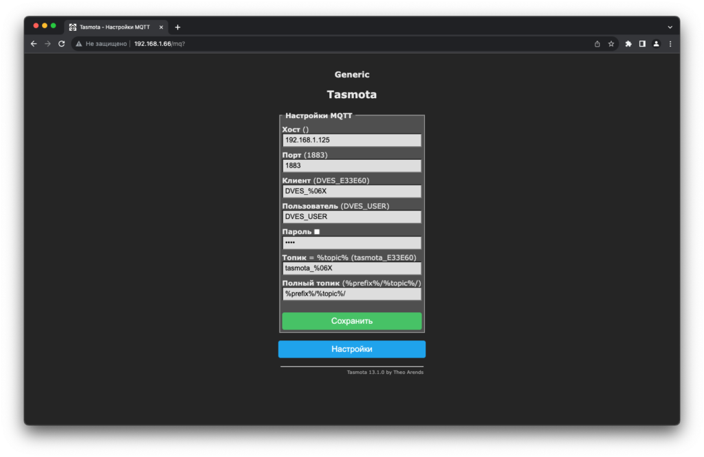
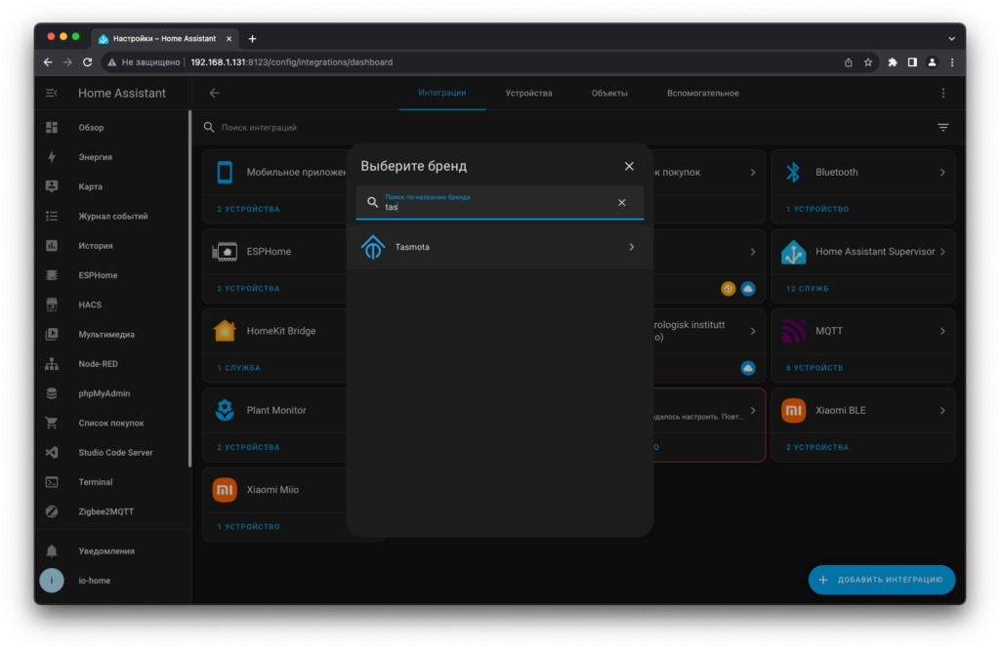
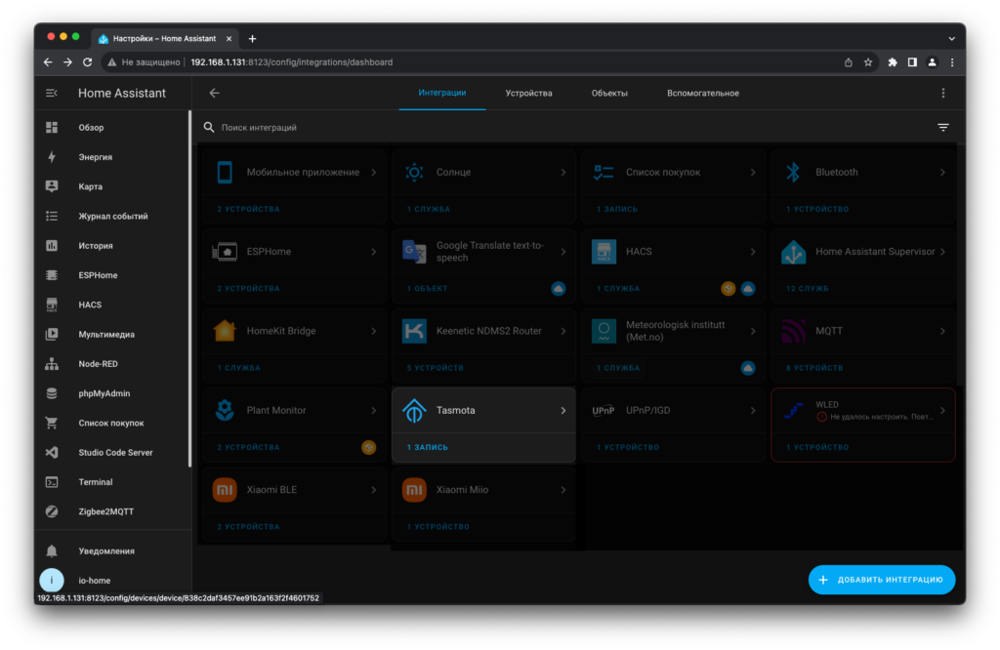
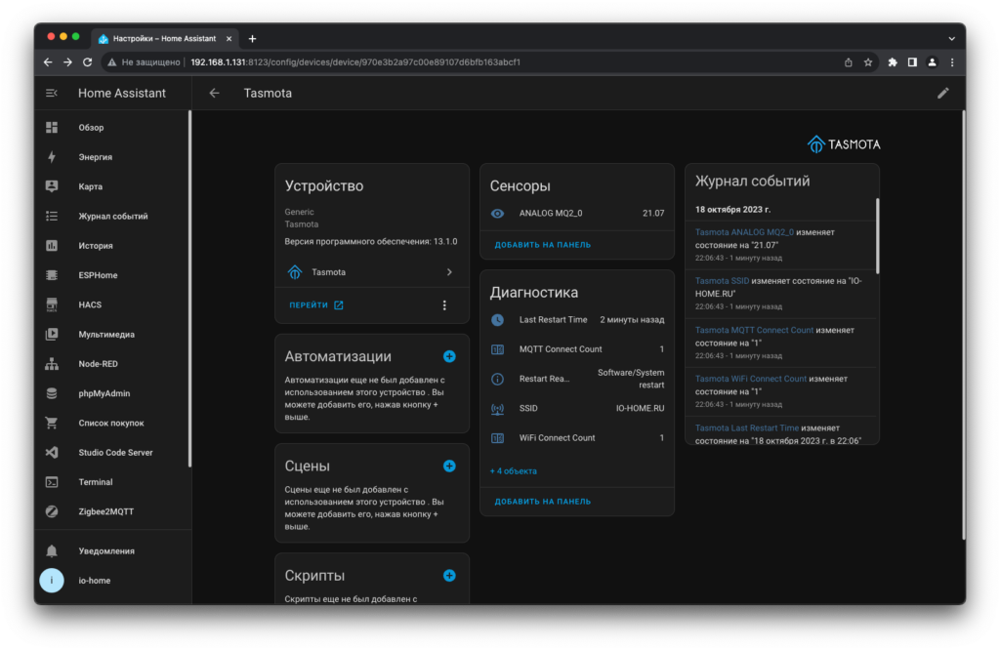

Главная страница › Home Assistant › Интеграции в Home Assistant › Добавляем Tasmota в Home Assistant
Добавляем Tasmota в Home Assistant
Ранее я рассказывал как установить Tasmota в ESP8266. Этот материал логическое продолжение. Сейчас мы рассмотрим, как подключить это устройство в Home Assistant. Чтобы можно было настраивать автоматизации и следить за показателями в более удобном интерфейсе.
Первым делом переходим в web интерфейс и настраиваем MQTT соединение. Для примера можно взять Mosquitto Broker, который мы так же настраивали раньше в подключении Zigbee2MQTT.
Переходим в настройки MQTT и заполняем все необходимые поля. Важно, чтобы Home Assistant и Tasmota смотрели на один и тот же хост. В моем случае это 192.168.1.125, а логин и пароль стандартный.
Открываем список интеграций и вписываем в строку поиска Tasmota. Home Assistant может сам определить, что у вас в локальной сети есть устройства и сам предложит добавить их. Везде нажимаем далее, после чего интеграция появляется в списке.
Немного подождав начнут появляться новые устройства, которые записывают данные в MQTT. У меня же появился датчик MQ-135 из предыдущей статьи.
Появление новых устройств зависит от частоты передачи данных. Если датчик опрашивается раз в 10-15 минут, то и данные появляется не раньше этого времени. Период опроса можно настроить в web интерфейсе.
В качестве альтернативы Tasmota можно рассмотреть ESPHome. Прошивки, по своему функционалу довольно сильно похожи. Но у последней более тесная интеграция с Home Assistant.